Kennneth's Homework due October 31st
-
Write fizzbuzz in javascript with the minimal possible number of characters.
Code golf - JavaScript FizzBuzz in 62 characters:
for(i=0;i++<100;console.log(i%5?j||i:j+"Buzz"))j=i%3?"":"Fizz"I got this code from the internets. It's confusing at first sight, but really interesting when you analyze it. Let's put in some whitespace:
for (i = 0; i++ < 100; console.log(i % 5 ? j || i : j + "Buzz")) { j = i % 3 ? "" : "Fizz"; }So, the loop iterates from 0 to 99 and increments
iby 1 in each iteration (i++). The condition ensures the loop runs as long asiis less than 100. It is surprising how the loop usesconsole.log()with a ternary operator inside as the conditional. As a last comment, I think the use ofjto print"FizzBuzz"when the number is evenly divisible by 3 and 5 is clever. -
Show us the Fibonacci numbers in Microsoft Excel; include the ratios of Fn/ Fn-1. Also calculate . Give a numbered list of steps used to create the spreadsheet that would be simple enough for a 5th grader to repeat. Explain every formula, every cell formatting choice, and include screenshots
Here is what the final result looks like:

First, we need to add the first three fibonacci numbers to the cells as the screenshot below shows:
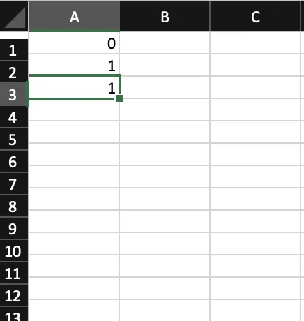Then, to add the next on the sequence, we go to the cell below and set its value to
=SUM(A2:A3). This is a function that sums all the cells that are between A2 and A3. Thus, it sums 1 + 1 and gets the result. We use the previous cell from the current number and the cell that is before the previous cell to calculate the next fibonacci number.After that, we should get a 2 there. Then, we need to take that cell click on the right lower corner and slide the mouse until the cell 100 (in this case). And then we'll end up with all the sequence. Basically, we just copied and pasted the function we used to get the two.
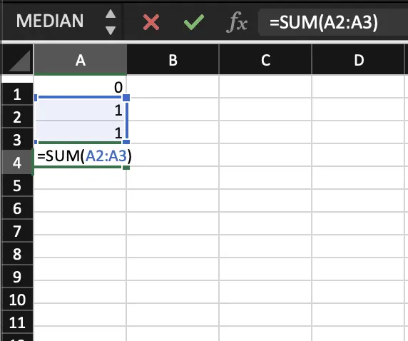
Once we have the 100th number of the fibonacci sequence, we are going to calculate the ratio between the third and fourth number. To do this, we use another function to round up to 14 decimal places and we divide the cells we want to know the ratio. In this particular case, the cell's value is
=ROUND(A4/A3, 14). This function takes the number to round and then another number that will correspond to the amount of decimal numbers we want to show. If the decimals are not showing, we go to the ribbon in the top of the app and we press the little button that has zeroes and an arrow pointing to the left.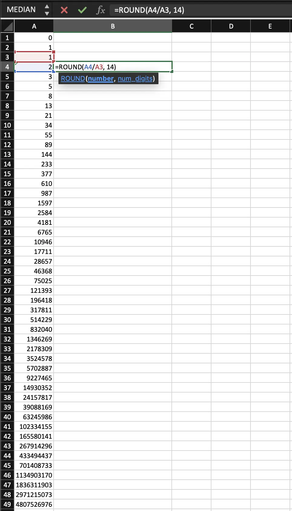 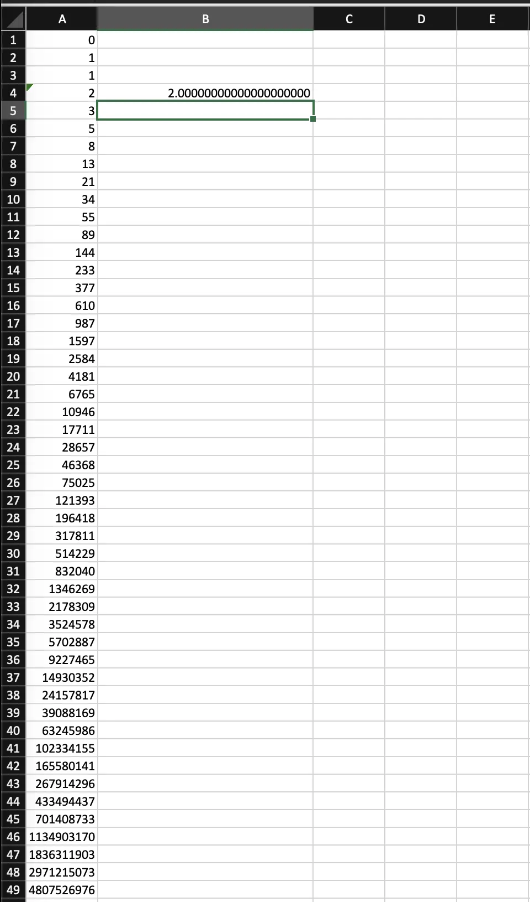After that, we want to do the same for all fibonacci numbers in the sequence. So, we do the same procedure that we did to get the sequence. We grab the lower right corner of the ratio and then slide it down until the 100th fibo number. After we have all the ratios, we want to point out that the ratios are the same in a specific number, this one being the 41st number in the sequence.
So, to do that, we use the
ROUNDfunction again only this time we use different values. The ratio stops increasing when it hits . So, in cell D41, we add=ROUND((1+SQRT(5))/2, 14)and we're done.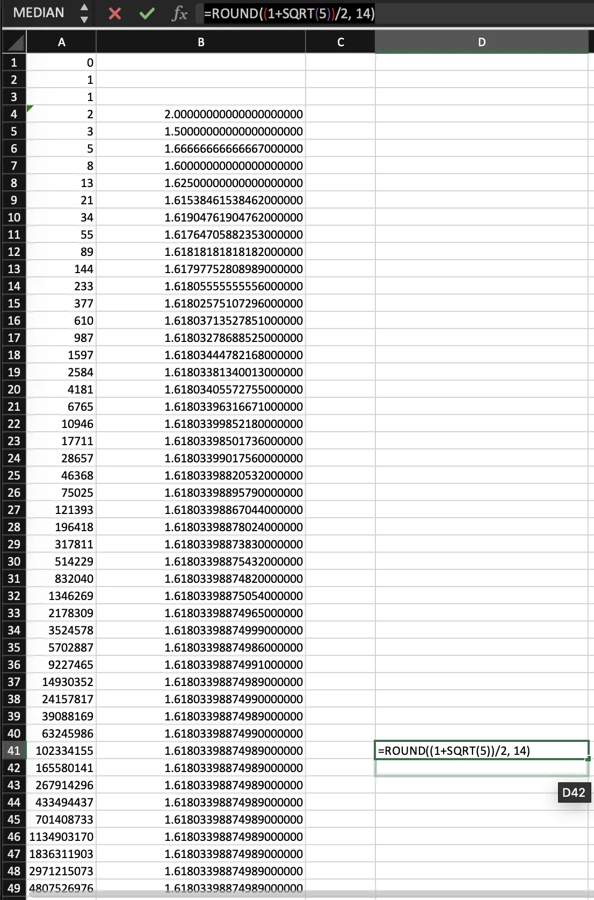 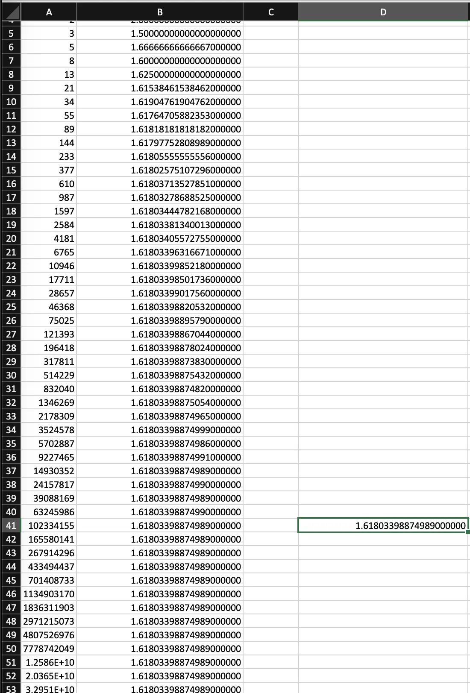 -
As we learned in the last homework, the Busy Beaver 6 Turing Machine (BB6) writes approximately this many marks onto the tape:
10↑↑15 = 101010101010101010101010101010
Show the svg that has the precise number, and make sure that it displays nicely when the homework page is very narrow, and also be sure that it looks good in night mode.

-
Try this in a JavaScript console:
function iAmAnObject() {} console.log(iAmAnObject.name); console.log(Object.keys(iAmAnObject.name));So ... is
iAmAnObjectan object or a function?Short Answer: it is a function.
The confusion might originate with the fact that functions in JavaScript are actually objects. Each function has a prototype property that is an object. That's why when you print
iAmAnObject.nameit prints a string with the name of the fuunction. To be clear, inside the prototype of the function there is anameproperty that corresponds to the name of the given function. The second part might seem a little confusing, but it's actually not.Object.keys(iAmAnObject.name)tries to access the keys of the name of the function, which is a string ("iAmAnObject"). However, since a string doesn't have keys like an object, this will not work as expected, instead, it will show the index number of each character in the string. In conclusion, (as I mentioned before)iAmAnObjectis a function. -
Euler's number e is often defined like this (expressed with LaTeX):
e = \lim_{{n \to \infty}} \left(1 + \frac{1}{n}\right)^nWrite some JavaScript code to investigate that definition.
To solve this question, I wrote this function:
function calculateEuler(limit){ for(let n=1; n<=limit; n++){ let eApprox = Math.pow(1 + (1/n), n); } }Basically, this function runs a loop until
nreacheslimit, with the last one being a parameter you give. Each time the loop runs,the program calculates the Euler number with the current value ofn. I added aconsole.log()to see the progress of this function and the value at each iteration. Here are some screenshots that I took when I was doing some experimentation with this number: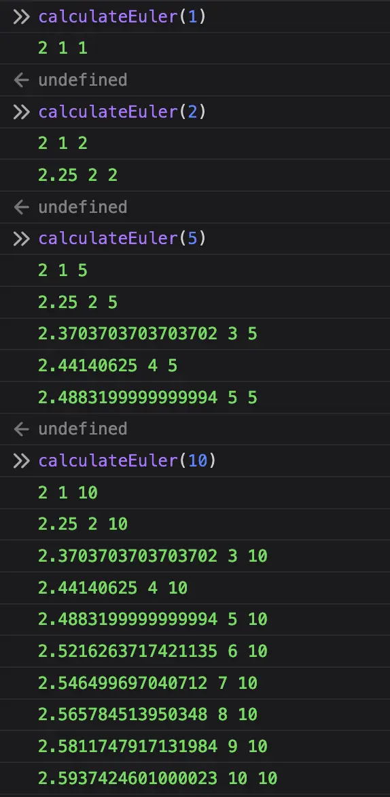 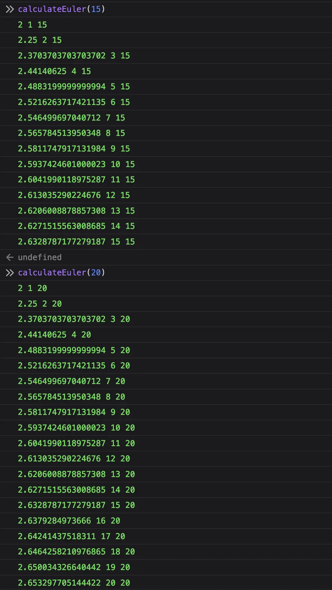 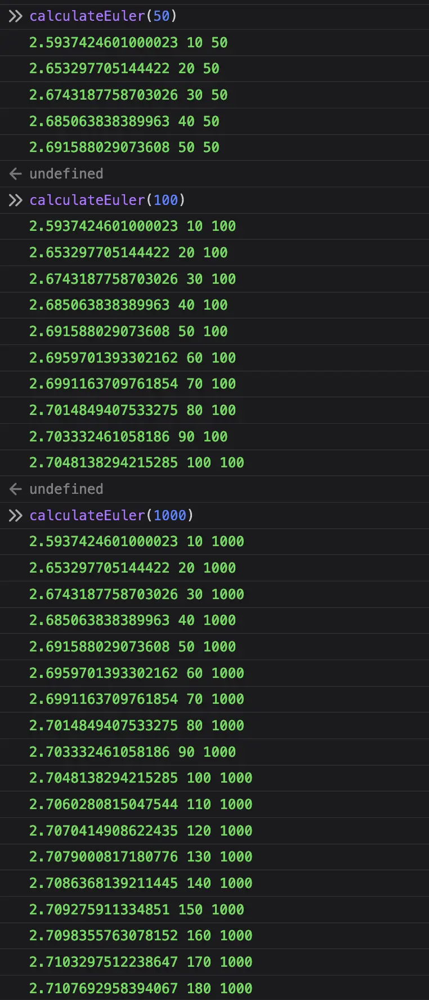For bigger numbers, I used an
ifstatement to print the results each time the n was divisible by 10 (every 10 iterations).When I was doing this experimentation, I discovered a couple things about the euler number. The function can give you insights into how the approximation changes as
nincreases. Asngets larger, the approximation of Euler's number should get closer to the actual value of 'e' (approximately 2.71828) due to the formula used. This is a way to demonstrate how this approximation converges towards the true value of 'e' asnincreases. -
Check this page using the W3C Validator. Write down some comments decribing what you learned.
I managed to get no errors, warnings or alerts in this validator. I just had 2 or 3 erros at the beginning. They were missing ending tags for an
h1. Most of the other results were alerts/warnings. The majority of them were about theimgtag. It was complaining that this tag didn't need an ending slash (/). The other ones were similar but this time with thelinkormetatag. -
Check this page using the WebAIM Web Accesibility Checker. Write down some comments decribing what you learned.
Well, as you can see in the screenshot below, I have no errors on the webpage (so far), although there are a couple issues for which the websites is complaining.
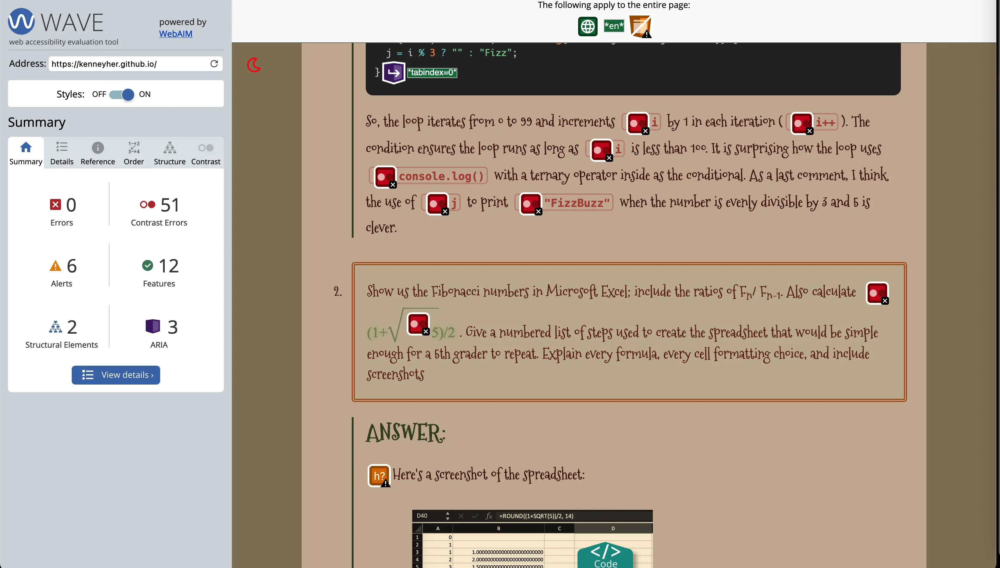But, if we dive in into the 51 contrast errors, we'll discover that these are actually caused by the mono font on this document. I think that is actually not a problem and the contrast is good enough so I left it like that.
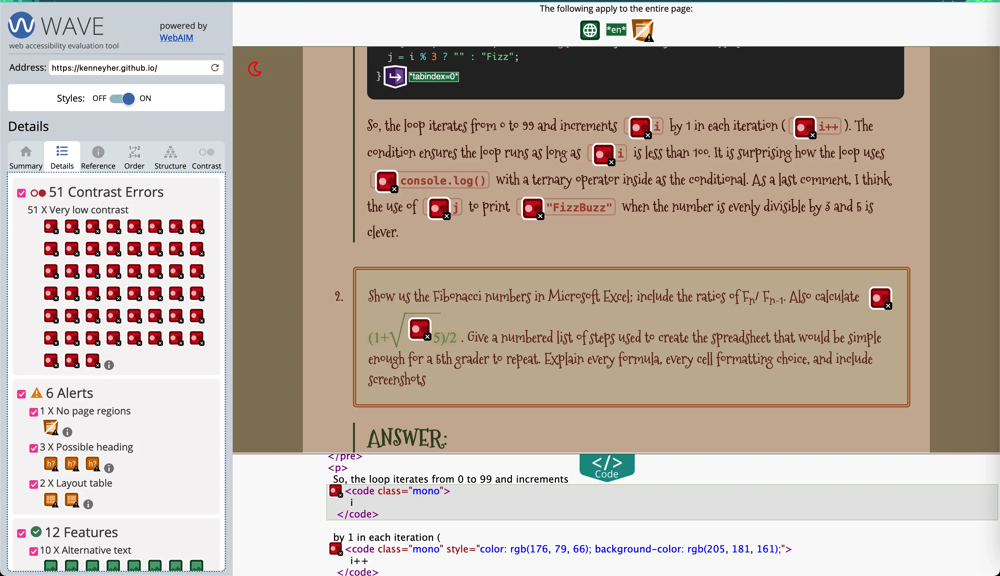There more categories but the most important that I checked was the Alerts category. I had 6 alerts, but the first one was the only one I considered to be interesting and worth investigating. The first alert said that I had "No Page Regions". I didn't understand at first, but after I did a google search for "ARIA" and "ARIA landmarks", I got pretty good information.
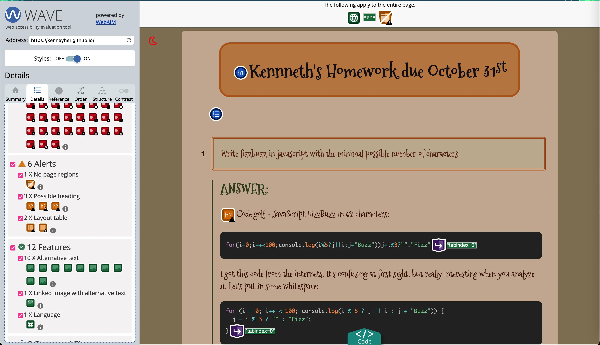Apparently, ARIA "is a set of roles and attributes that define ways to make web content and apps more accesible to people with disabilities" (from MDN web docs: ARIA ). It stands for Accessible Rich Internet Applications. But the important thing here are regions or landmarks because the checker complianed that "No page regions or ARIA landmarks were found". So, I looked for those and I discovered that page regions and/or landmarks: "provide a powerful way to identify the organization and structure of a web page" (according to W3C: Landmark Regions ).
To fix that alert, all I did was to add a
maintag in the body.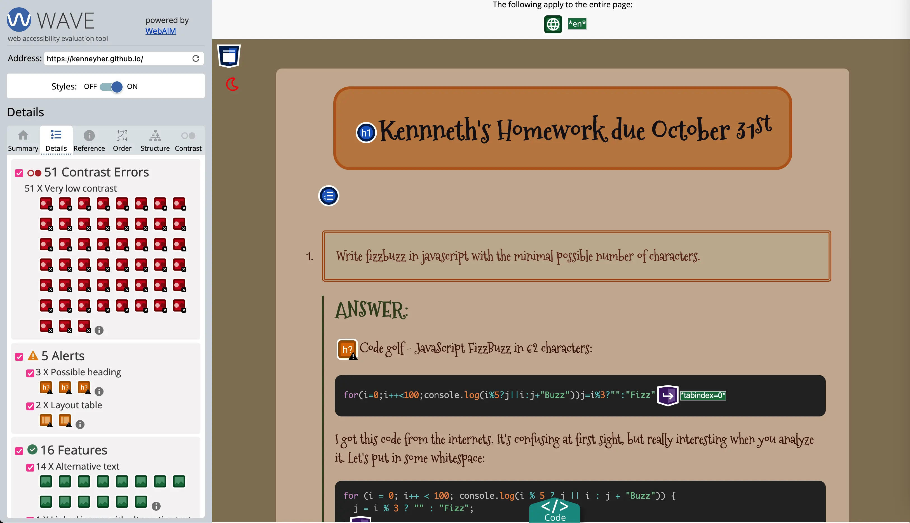The other alerts are a little bit silly. Just suggestions that some text should be headers and a wrong use of tables (to create matrices). But those were some important points that I recieved from the Accesibility Checker. I had some contrast issues originated from the colors of the mono text that I solved by making the color darker, same happened to the math text. Once I did that, the webpage was clean (except for the header suggestion alerts).
On the other side, the dark version of the website had more contrast issues that I had to solve by making the font a bit brighter.
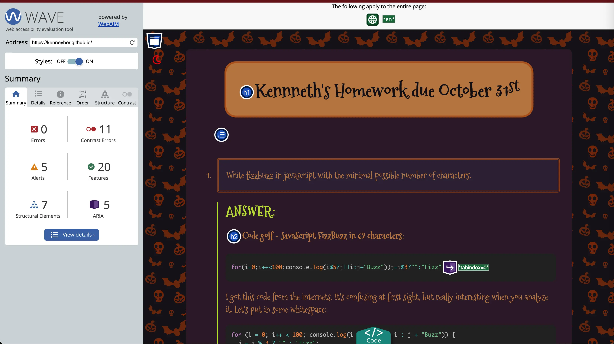 -
Speedrun Flexbox Froggy. Can you complete the whole thing if you time box it to four hours max? Once you've finished write down a few comments/observations. Did you learn anything new?
I managed to finish Flexbox Froggy in 15 minutes. The game is really fun and interesting. It helps people to get used with the
display:flexcss property. Some levels are really fun and interesting because you need to mix some properties to complete them. For example, there was one level where I had to flip the order of the froggies withflex-direction(because the were of different colors that matched the water lilies) and then withalign-itemsorjustify-contentI would make them go at the end withflex-end.It was a really fun game. The last level was really interesting because you had to mix not just two properties but four. There was one property that I had never used before and that is
flex-flow. Withflex-flowyou can set the direction and the wrapping in just one property. For instance, if you want to have a row and you want them to wrap in reverse order, you would normally doflex-direction: rowandflex-wrap: wrap-reverse; but you can do that withflex-flowsetting it toflex-flow: row wrap-reverse.All in all, I really had fun doing completing assignment!
-
Calculate 1597 ÷ 987 to 15 decimal places using long division (these are consecutive Fibonacci numbers). This is an approximation of the Golden Ratio, whose symbol is ϕ. Here is a link that will show the first 12 decimal places; just extend the work a little farther: Long Division Calculator With Decimals . Comment on your thoughts and observations regarding the HTML / CSS.
Here's how I implemented the division with a
table. The top row shows the actual value of ϕ so that we can compare to this approximation:ϕ = 0 0 0 1. 6 1 8 0 3 3 9 8 8 7 4 9 4 8 4 0 0 0 1. 6 1 8 0 3 4 4 4 7 8 2 1 6 8 1 9 8 7 1 5 9 7. 0 0 0 0 0 0 0 0 0 0 0 0 0 0 0 - 0 1 5 - 0 1 5 9 - 0 1 5 9 7 - 9 8 7 6 1 0 0 - 5 9 2 2 1 7 8 0 - 9 8 7 7 9 3 0 - 7 8 9 6 3 4 0 - 0 3 4 0 0 - 2 9 6 1 4 3 9 0 - 3 9 4 8 4 4 2 0 - 3 9 4 8 4 7 2 0 - 3 9 4 8 7 7 2 0 - 6 9 0 9 8 1 1 0 - 7 8 9 6 2 1 4 0 - 1 9 7 4 1 6 6 0 - 9 8 7 6 7 3 0 - 5 9 2 2 8 0 8 0 - 7 8 9 6 1 8 4 0 - 9 8 7 8 5 3 Here's what it looks like using MathML.
-
Show the Turing Machine instructions for Busy Beaver 5 (aka BB5). Write a few comments regarding what this one looks like while running as compared to what BB4 / BB3 / BB2 look like while running.
I took BB5 code and inserted it into the Turing Machine Simulator. I watched it at least 10 times and I also rewatched BB2, BB3, and BB4 and recorded the steps that BB2 and BB3 make. In the case of BB4 I only recorded 20 steps but I was able to find some similarities between BB5 and all of these.
The similarities are not whole steps between them or something like that, but more like steps in which the states, symbols, and movements are the same. First of all, there are no similarities between BB5, BB2 and BB3. I found nothing in common between them. Although, BB4 shares some rules with BB5.
The first rule they share is
q2, _ -> q3, x, >. This rule appears for the first time in step 13 in BB5 and in step 3 in BB4. And it repeats a few times after in BB5 (although not following the same pattern). The next rules happen to be one after another, the rules are:q3, x -> q0, x, <q0, _ -> q1, x, >q1, x -> q1, x, >q1, _ -> q2, x, >
These rules happen to be in the following order:
q3 -> q0,q0 -> q1,q1 -> q1(this rule repeats for 4 steps), and finally,q1 -> q2.These were the only steps I identified. They are repeated differently while BB5 is running, but I coudn't tell if there is some sort of "connection" between BB5 and BB2 or BB3.
//-------CONFIGURATION name: bb5 init: q0 accept: qHalt //-------DELTA FUNCTION: q0, _ q1, x, > q1, _ q2, x, > q2, _ q3, x, > q3, _ q0, x, < q4, _ qHalt, x, > q0, x q2, x, < q1, x q1, x, > q2, x q4, _, < q3, x q3, x, < q4, x q0, _, < -
The Mandelbrot set is ... a set. It is exactly those points c in the complex plane that "don't spin off to infinity" when we repeatedly do the transformation z -> z^2 + c and we start with z=0. So when we draw or graph or depict this set it's a black region clustered around 0+0i. However, when we do an internet search for "Mandelbrot Set" we find all sorts of colorful drawings. Where do these colors come from? How are they designed? Explain and illustrate.

After I saw lots, and lots of mandelbrot set pictures with different colors, patterns, and others, I have developed a hypothesis: The different colors (blue, black, orange, etc) are generated depending on how fast the transformation increments or goes to infinity. For instance, the blue would be produced by points that shoot off to infinity, the black would come from points that does not shoot off to infinity, and the orange or yellow correspond to the numbers that increase but do not go to infinity.
When I create the 900 by 900 canvas, to decide if each pixel will be black or colorful, I can follow a specific rule. That rule goes something like this: if, after 30 transformations, a pixel's magnitude doesn't exceed 2, it stays black. But here's where it gets interesting. We introduce colors based on the pixel's journey. At 10 iterations, it turns a vibrant blue. Hit 20 iterations, and it becomes a lively orange. And when the pixel reaches 25 iterations, it shines bright in yellow. This blend of black and colors adds an artistic touch to our canvas, telling a beautiful mathematical story.
-
The book CSS Master by Tiffany Brown explains how CSS uses matrices to do transformations. Give an overview and some key examples of this concept.
One important fact to point out is that the chapter talks about a CSS property called
transformand this one can be either a 2d transformation or a 3d. For thematrix3dfunction you use a 4x4 matrix, that is, 16 arguments; for a 2d transformation, 3x3 matrices are used.First, the
matrixfunction works with a 3x3 matrix, takes six parameters distributed like this:a b c d e f 0 0 1 Each transform function takes a matrix. For example,
scale3dtakes a 4x4 matrix represented below,where sx, sy, sz are the components of the transformation in each dimension (X, Y, and Z). .sx 0 0 0 0 sy 0 0 0 0 sz 0 0 0 0 1 An important aspect to keep in mind when working with transformations is that when you have two different transformation functions together, that means you multiply the two matrices corresponding to the alterations you're applying to the object
So, in a nutshell, when you use the CSS property
transformyou are working with matrices. Specific values in the matrices correspond to the various dimensions of the object that are being changed. If you use two or more different transfomation functions, you are multiplying the matrices together. -
Give us a brief Screeps update and some screenshots.
So, I was killed a couple times during this period of time. The first time I was killed was on the summer break, around June. I tried to remake my whole colony (because another guy sent a nuker into my room) and it was going really well. And then things started going down.
Around July I was slaughtered by a massive horde of invader creeps. And just like that, I started again. Then, a couple weeks ago with my new room and my Room Controller in level 3, I got killed again, only this time the reason was attacker creeps sent by another player
So, as you can see, a lot has happened lately. I died a lot of times, but that's not the end of this screeps story. I started a new colony from zero, and my plan is to create at least one room with an unstoppable defense and attack, with a sophisticated self-maintaining system. I got my new room yesterday. I wrote some code and I got the harvesters, upgraders, and builders running. Here's a screenshot:
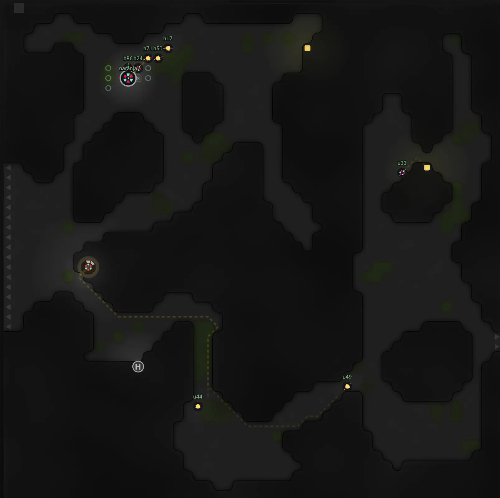A few weeks after that, I was killed again. I decided to move to another area of the game and I chose a room to start again. This area is know ad "Respawn Area". It allows recently killed players to grow their colonies without the risk of being killed in the middle of the process. It is really nice, although it only lasts for a few weeks and then you get to be exposed to the other players.
I'm doing good in my new room. I got to level 4 and my creeps are doing a really good job mantaining everything in order and managing the energy. I still need to implement some roles to have a complete self-mantained colony, but I'll do that later one before I get to level 5. This was a fun exercise and it made me practice my skills in programming and my knowledge in Screeps.
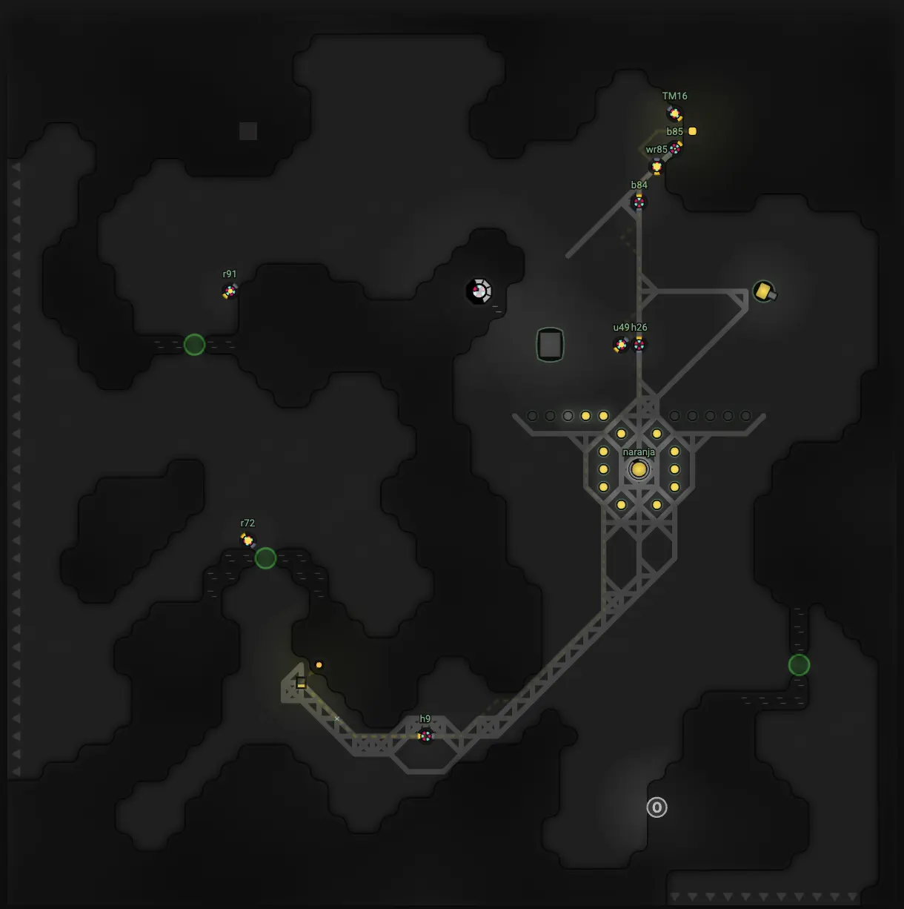